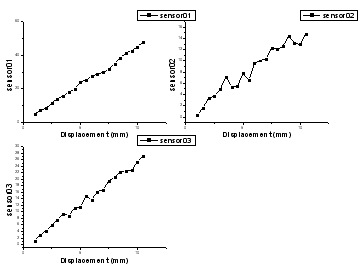
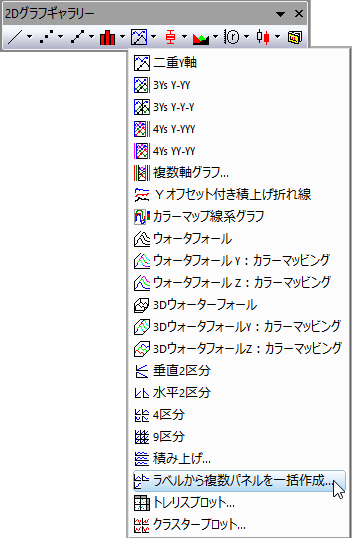
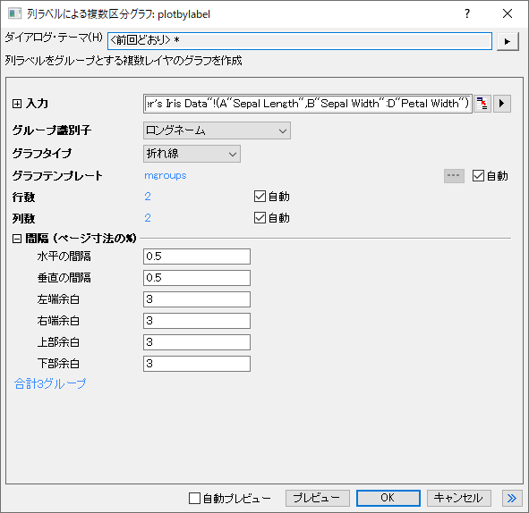
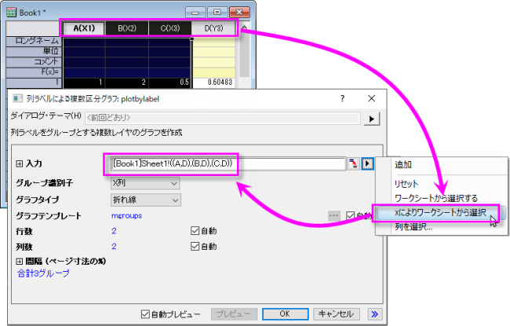

複数区分グラフ
MultiPanel-Graph

要求されるデータ
少なくとも1つのY列、あるいは、その部分領域を選択する必要があります。各Y列において、関連付けられたX列がある場合はそれを使用し、そうでない場合は、Y列のサンプリング間隔または行番号が使用されます。
グラフ作成
必要なデータを選択します。
を選択します。
または、
2Dグラフギャラリーツールバーの複数区分...ボタンをクリックします。

これによりplotbylabelダイアログが開きます。

選択されたデータセットのグループ識別子、グラフタイプ、グラフテンプレート、パネル配置、間隔を指定します。OK をクリックして、グラフを作成します。このダイアログの詳細は、このページを参照してください。
テンプレート
MGROUPS.OTPU (Originプログラムフォルダにインストールされています)
ノート
- Origin 2026以降、グループ識別子ドロップダウンリストでプロット数を選択して、入力プロットを別々のレイヤに分割するためのグループの数を使用できます。
- 複数の連続X列があり、次にXXXY列などの隣接するY列が1つある場合は、フライアウトメニューからXによりワークシートから選択を選択して、入力として複数のXY範囲を選択できます。

- ラベルによる複数区分グラフでは、複数のレイヤが含まれています。レイヤ数は入力データのグループ数で決まります。入力データは、グループ識別子で選択された列ラベル行またはX列に従ってグループ化されます。
- 作図の詳細共通の表示コントロールを使用して、複数レイヤグラフでレイヤ、プロット、および軸のプロパティを同時に編集できます。詳細については、(作図の詳細)レイヤタブコントロールを参照してください。
- グラフテンプレートコントロールを使用してグラフテンプレートを指定し、テンプレートとともに保存されたフォーマットをパネルに適用することができます。デフォルトでは、組み込みのテンプレートmgroups.optuがパネルで使用されます。